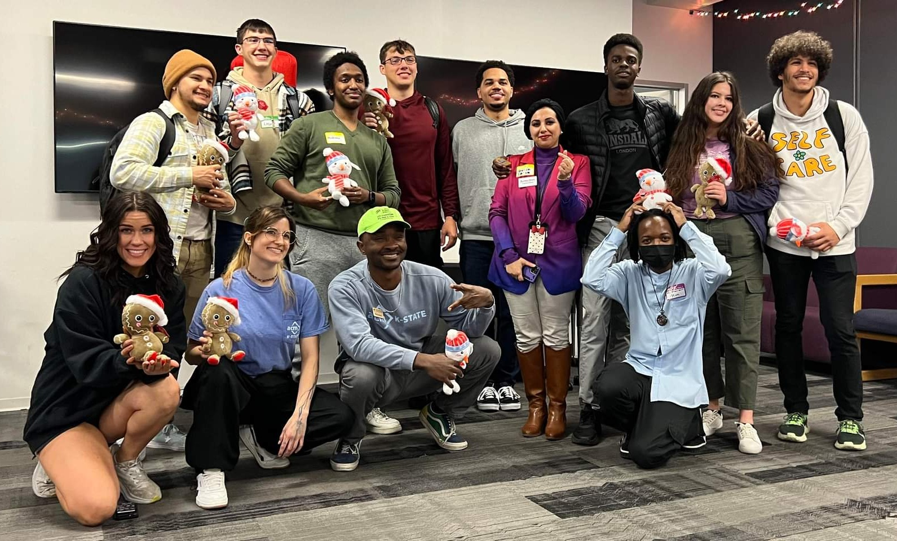

Hour of Code 2023 - Press
The D³ Lab proudly hosted the Hour of Code on Tuesday, December 5, 2023, through the K-State Computer Science Department. The event was part of the global Computer Science Education Week and aimed to introduce computer science to families and children through hands-on, playful learning. It reflected the D³ Lab’s mission to make computer science accessible, engaging, and developmentally appropriate for learners of all ages.
The event welcomed over 70 registrants including families with children from preschool to middle school. The department’s classrooms were transformed into a lively discovery space filled with movement, laughter, and color. Families explored activities together while K-State student volunteers guided children through fun coding challenges and creative problem-solving exercises.
Upon arrival, parents completed consent and photo forms, while children received bright stamp cards. Each completed activity earned a stamp, encouraging exploration across multiple learning zones. Once children collected four stamps, they returned to the Info table to receive personalized certificates and small prizes celebrating their accomplishment. The goal was to reward curiosity and perseverance while making learning fun and meaningful.
The event featured four themed areas, each tailored to a specific age group and learning level.
- Little Tech Explorers (Ages 0–6) — Introduced computing ideas through unplugged, playful activities. Children hopped through Code Hopper mats to practice sequencing and logic, crafted their own algorithms in Code a Cat, and listened to coding-themed storybooks that turned programming into storytelling.
- Block Adventures I & II (Ages 8+) — Focused on creativity and digital design. Using HatchXR, participants built an interactive VR Piano, while others created a ChatGPT-powered chatbot modeled after Albert Einstein using creativeCode, gaining insight into artificial intelligence and machine learning.
- Byte Innovators (Ages 6+) — Combined coding, logic, and hands-on play. Children turned drawings into video games in Game Design, learned how hardware and software interact in Networking with Makey Makey + Scratch, and explored sorting and classification through the fun Data Science Detective game.
Throughout the event, families moved between stations, experimenting with both unplugged and digital activities. Volunteers celebrated each child’s success—clapping, encouraging, and helping debug when something didn’t work right. Parents often joined in, helping their children problem-solve or create together. The atmosphere was filled with joy and curiosity, turning what could have been “just coding” into an afternoon of creativity and collaboration.
For many volunteers, it was their first experience teaching young children. The D³ Lab trained them beforehand on how to simplify computer science concepts, communicate clearly, and make every interaction encouraging and inclusive. Their enthusiasm and teamwork played a vital role in the event’s success.
By the end of the day, around 32 families had actively participated in the activities, making it one of the largest community outreach events for the department that semester. Parents praised the inclusive design, noting how their children were excited to “code again” after the event. The D³ Lab’s frameworks transformed abstract computing ideas into experiences children could see, touch, and understand — proving that even at an early age, learners can think computationally when guided through creativity and play.
The success of the Hour of Code demonstrated the D³ Lab’s leadership in bridging research, teaching, and community engagement. It showcased how thoughtful educational design can empower families, strengthen community connections, and inspire the next generation of thinkers, creators, and problem solvers.
Event Numbers
The Hour of Code event received approximately 70 registrations, including both families and volunteers. Of those, 49 families signed up with their children, and 20 volunteers from K-State Computer Science supported the activities.
Volunteers
Mitchell Hutchinson, Zac Mixon, Jayton Hay, Chipo Sekabanja, Supriya Bolla, Wesley French, Vania Santillana, Taj Ikhlaas, Carrie Aponte, Logan Smith, Dylan Rosquist, Ella Carlson, Pedro Alcantar-Mendez, Abdullah Rasheed, Evangelos Chitwood, Logan Hayward, Emma Lucas, Timothy Tucker, and Manny Adeniji
Family Feedback & Testimonials
Families shared how the D³ Lab Hour of Code made computer science feel approachable, creative, and fun.
“Amazing event, thank you!”
“Our kids had fun!”
“The volunteers were fantastic patient”
“The stamp card idea kept our kids engaged"
Event Gallery
Moments from the D³ Lab Hour of Code — capturing the excitement, teamwork, and creativity of children, families, and volunteers as they explored computer science through play and discovery.